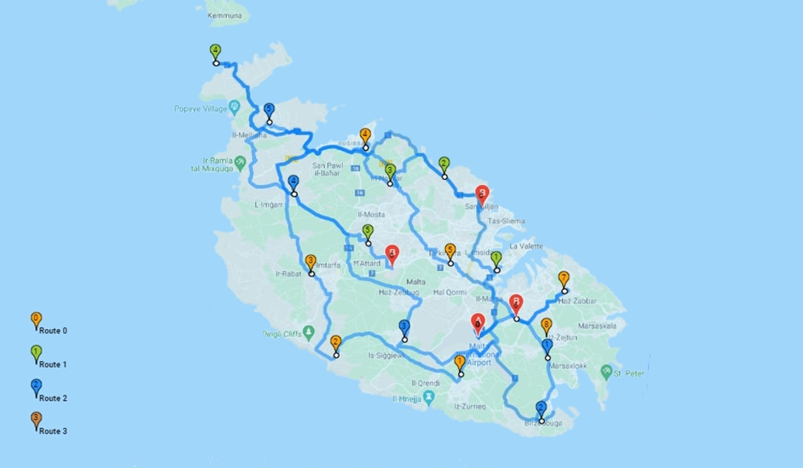

Introduction
The Capacitated Vehicle Routing Problem (CVRP) is a variant of the well-known Vehicle Routing Problem (VRP) in which each vehicle has a limited capacity and the aim is to find the optimal routes for a fleet of vehicles to deliver goods to a set of customers while minimizing the total distance traveled.

Modelling the problem
In the context of a taxi service, the CVRP can be used to determine the most efficient routes for taxis to pick up and drop off passengers while taking into account the capacity of each taxi (i.e., the number of passengers it can carry at a time). This is particularly useful in situations where there are a large number of passenger requests and a limited number of taxis available.
Depending on your role, if you are an Operations researcher or a Developer, it will determine how you will tackle this project.
If you are a developer, you can just pick a module from the tools out there, for example OR-tools have a ready to use set of functions and classes to solve a large set of combinatorial problems, with different algorithms behind the scenes.
In the other side, if you are an Operations researcher, you will find your self more dealing directly with the algorithms in use, and try to reduce the time complexity while the set of customers get larger and the scalability of the projects get more important.
Approach
There are several approaches for solving the CVRP, including exact algorithms (e.g., branch and cut) and heuristic algorithms (e.g., local search, meta-heuristics: genetic algorithms and simulated annealing). The choice of the algorithm will depend on the specific requirements of the problem, including the size of the data set and the desired level of accuracy.
Variables and parameters
We assume that the taxis are of the same type, with constant capacity of 3. No horizon time for this use-case, meaning that the customers are not restricted in time. (Not a real case, we rarely can find a customer willing to wait for an undefined amount of time).
: set of available Taxis .
: set of available Passengers .
: set of sources of missions.
: set of destinations of missions.
: capacity of the taxi (since we supposed it’s constant for all the vehicles)
Objective function
the objective function is designed to define the goal that the optimization algorithm seeks to achieve. The specific objective function chosen for the CVRP depends on the problem requirements and the desired outcome. Here are a few examples of objective functions commonly used in CVRP:
- Minimize Total Distance: The objective is to minimize the total distance traveled by all vehicles in completing their routes. The aim is to reduce fuel costs, vehicle wear and tear, and transportation time.
- Minimize Number of Vehicles: The objective is to minimize the number of vehicles required to serve all customers while respecting the capacity constraints. This objective focuses on reducing operational costs by optimizing vehicle utilization and minimizing fleet size.
- Minimize Total Cost: The objective is to minimize the overall cost, taking into account factors such as vehicle costs, driver wages, fuel expenses, and maintenance costs. This objective provides a comprehensive view of the total operational expenses.
- Balance Workload: The objective is to achieve a balanced workload distribution among the vehicles. The goal is to avoid situations where some vehicles are overloaded while others have excess capacity, thus improving overall efficiency.
- Maximize Customer Service Level: The objective is to maximize the number of satisfied customers or meet specific service level requirements (e.g., percentage of customers served within specified time windows). This objective focuses on providing excellent customer service and meeting delivery commitments.
It’s important to note that the choice of objective function depends on the specific priorities and constraints of the problem at hand. Often, a combination of objectives or a weighted sum of multiple objectives can be used to capture different aspects of the CVRP. The objective function guides the optimization process by quantifying the desired outcome and providing a measure for evaluating and comparing different solutions.
The objective function for the Minimize Total Distance objective in the Capacitated Vehicle Routing Problem (CVRP) can be represented by the sum of the distances traveled by all vehicles. Let’s denote the variables used in the objective function:
- : The distance between two locations and . This can be obtained from a precomputed distance matrix or calculated dynamically based on the coordinates of the locations.
- : A binary decision variable indicating whether vehicle travels from location to location . It takes the value 1 if the vehicle follows that route segment and 0 otherwise.
- : The capacity limit of vehicle , representing the maximum amount it can carry.
- : The demand of customer , representing the quantity of goods or services required by that customer.
With these variables, the objective function for minimizing total distance can be formulated as:
Minimize:
Subject to:
Each customer is visited exactly once.
Each vehicle starts and ends at the depot.
Capacity constraint for each vehicle.
In this objective function, we sum up the distances traveled by all vehicles, considering the binary decision variables that determine the route taken by each vehicle. The constraints ensure that each customer is visited exactly once, each vehicle starts and ends at the depot, and the capacity of each vehicle is not exceeded.
The optimization algorithm seeks to find the values of the decision variables that minimize the total distance traveled while satisfying all the constraints of the CVRP.
Cost matrix
After, Calculated the cost matrix, which is an essential component in solving the Capacitated Vehicle Routing Problem (CVRP). It represents the distances or costs associated with traveling between each pair of locations (nodes) in the problem, and provides the necessary information for route planning, constraint validation, and optimizing the objective function in CVRP.
For now, let’s start simple, and consider the distance between locations is the significant variable, the cost matrix will be as below: In a real situation, we need to consider The easiest way to compute the distance between the set of locations, we use the Haversine formula. below is the implementation in Python:
import math
def haversine_distance(lat1, lon1, lat2, lon2):
'''Compute the haversine distance between two locations'''
# Convert coordinates from degrees to radians
lat1_rad = math.radians(lat1)
lon1_rad = math.radians(lon1)
lat2_rad = math.radians(lat2)
lon2_rad = math.radians(lon2)
# Haversine formula
dlat = lat2_rad - lat1_rad
dlon = lon2_rad - lon1_rad
a = math.sin(dlat/2)**2 + math.cos(lat1_rad) * math.cos(lat2_rad) * math.sin(dlon/2)**2
c = 2 * math.atan2(math.sqrt(a), math.sqrt(1-a))
# Radius of the Earth (in kilometers)
radius = 6371
# Calculate the distance
distance = radius * c
return distanceWe need to know that the Haversine formula is not accurate, so the generated solution will not be optimal. in order to compute the real distance, we need to use GIS based tools, such as OSRM, they have a backend server to consume its APIs, but in this tutorial, we consider the Haversine distance for simplicity to generate a feasible solution and test the functionality of this code.
import numpy as np
def distance_matrix(customers):
num_customers = len(customers)
# Initialize the distance matrix with zeros
distance_matrix = [[0] * num_customers for _ in range(num_customers)]
for i in range(num_customers):
for j in range(num_customers):
if i != j:
distance = haversine_distance(
customers[i]['lat'],
customers[i]['lon'],
customers[j]['lat'],
customers[j]['lon']
)
distance_matrix[i][j] = distance
return distance_matrixWe ran on these example sets:
customers = [
{'lat': 52.5200, 'lon': 13.4050, 'demand': 5},
{'lat': 48.8566, 'lon': 2.3522, 'demand': 7},
{'lat': 51.5074, 'lon': -0.1278, 'demand': 3},
# ...
]
distance_matrix = distance_matrix(customers)
print(distance_matrix)Optimization model
Now, that we have the cost matrix, we can solve the VRP with capacity constraints. at Each location in the problem has a specific demand associated with the quantity of items to be picked up at that location. Furthermore, each vehicle has a maximum capacity limit of .
After searching for the Python modules helping to solve this combinatorial optimization problem, Found that ORtools propose an end-to-end algorithm, with a feasible solution in a considerable computational time. In addition to scipy.
We will develop the function in c++, since we seek performance optimization, knowing that the VRP is computationally expensive.
/*TODO - Develop the cvrp algorithm in vanilla c++*/Alternatively, simply we can use existent frameworks written in C-family languages (e.g. Python), such as ORtools or PulP.
Example usage:
# Example usage
customers = [
{'lat': 52.5200, 'lon': 13.4050, 'demand': 5},
{'lat': 48.8566, 'lon': 2.3522, 'demand': 7},
{'lat': 51.5074, 'lon': -0.1278, 'demand': 3},
# ...
]
depot = {'lat': 40.7128, 'lon': -74.0060}
vehicle_capacity = 15
result = cvrp_minimize_distance(customers, depot, vehicle_capacity)
for vehicle in result:
print("Vehicle Route:", vehicle['route'])
print("Total Distance:", calculate_total_distance(vehicle['route']))
print()The time complexity of this function is . Generally, the time complexity of exact algorithms typically grows exponentially with the size of the problem, making them less suitable for large CVRP instances. Heuristic algorithms, on the other hand, aim to find good solutions quickly but do not guarantee optimality.
Solution
After finding the optimal routes using the CVRP, they are saved to a list or array for visualization on a map.
One key consideration when applying the CVRP to a taxi service is the trade-off between efficiency and customer satisfaction. While it may be tempting to find the shortest possible routes for the taxis, this may not always result in the best experience for passengers. For example, a taxi may need to take a longer route to pick up a passenger in order to minimize the wait time for that passenger.
Dataset
The datasets for this analysis include information about passengers, taxis, and the depot. The coordinates for all pickup and delivery locations are also included in the datasets. the dataset is stored either in a structured JSON or a CSV file.
Conclusion
In conclusion, the CVRP is a useful tool for optimizing the routing of taxis in a service, but it is important to consider both efficiency and customer satisfaction when applying it in practice.